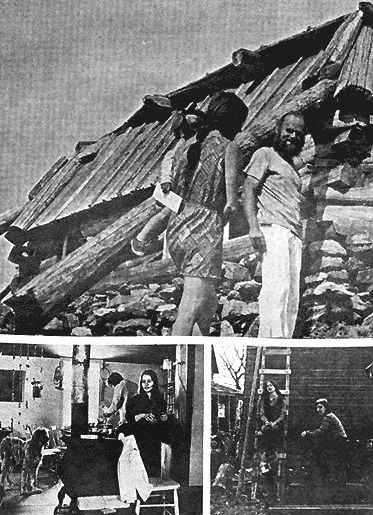
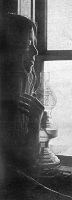

THE TORONTO TELEGRAM WEEKEND MAGAZINE
DALE GRANT
Goin' up the country,
Got to get away
All this fussin' and fightin'
Can wait for another day.*
SO SINGS the rock group Canned Heat. Sharing their feelings completely are large numbers of young people who have gone to live on rural communes in Canada and the US, mostly in California and New Mexico.
The recent back-to-the-land movement began when the original "flower children" saw Haight-Ashbury in San Francisco degenerate into a deadly gathering ground for dope pushers and the university campuses into bloody battlefields. And it is still continuing.
In Ontario, a series of communes has sprung up on hitherto abandoned or marginal land around the town of Barry's Bay, just over 100 miles west of Ottawa. The residents, who are mostly young and generally what some would call hippies; consist of 34 adults and seven children who come from a wide variety of backgrounds in Canada and the US.
They've established five communes, with several more planned. Among them, they represent a cross section of the different forms rural communes can assume.
The first farm we visited lies amid low, rolling hills half a mile from the nearest concession road. It has a variety of names, but is mostly called the Hog Farm, after one of the first communes in the US to which some of the residents here belonged.
Its regular population numbers eight, with an average age of 20 and one child, Peter, who is three.
They have come here to "get away"; "to quit the insanity" and, as we were told again and again, "to find peace".
Just how strong this feeling was, we were shortly to find out.
We arrive at night, along a twisting footpath and Rick, the original founder of the commune, meets us in the yard.
"Too much man; it's been a long time. Glad to see you."
Grinning broadly and shaking his shoulder-length hair from his eyes, he ushers us through the door of a typical, square, turn-of-the-century Canadian farmhouse.
Enter confusion. The four of us, laden with packs and sleeping bags, are suddenly in a too-small kitchen already filled with dogs, cats, kids and five adults preparing supper.
Amid the babble we pile our gear in a corner and slap shoulders with our hosts.
Dinner is served about a low, long table in the living room. Soybean soup, soybean bread and a stew that is mainly soybeans. Hardly a varied menu, but nutritious and surprisingly tasty.
When I comment on it, Rick's wife, Suzanne snorts, "Ha, you should have been here last week. We had soybean ice cream." Knowing them, I believe it.
Later, sitting around the potbellied stove, we notice a certain coolness on the part of some people toward us. It seems our original impression of general cooperation on the article, as relayed to us by one commune member on a visit to Toronto, was a trifle visionary.
Mark, one of the long-term residents, draws me aside: "Listen man, I don't want this thing to go down. We came up here to get away from the machine. The Establishment and magazines are part of it. We don't want the city life and its technology up here. Do you understand?"
I can in a way, but as David Zimmerman, our photographer, put it later: "Sure, they're getting away from it all. With a pickup truck in the driveway to go to town for supplies. Sure.
"They've got to realize that they always will be part of the 'machine', and that they will always be involving themselves with technology. Even fire is a technological development."
In the end, after much discussion among themselves, it is decided that those who wish to cooperate with us will do so on an individual basis.
One who does is Rick. He is the actual owner of the place, having purchased it with a small inheritance he received.
This doesn't mean he runs the Hog Farm; far from it. He is just one more member, and doesn't mind that at all.
He puts it this way: "We share everything equally as much as possible. I feel the others are contributing just as much as 1 am by making up the pool of helpers without which we couldn't survive."
"They've got to realize that they always will be part of the 'machine' "
The same spirit prevails in the purchase of such supplies as they need from the outside world. Those who have, contribute what they can. Their money has come from the sale of handicrafts, gifts and in some cases, I suspect, parental help.
The goal is self-sufficiency in two years. They grew vegetables and a soybean crop last year and raised chickens. This year they hope to get a cow and plant corn and wheat.
David Harvey, who lives nearby, shares the Hog Farm's feelings of "got to get away", but looks at it from a slightly different angle. He is 38, holds a PhD in English literature and until a year ago was a professor at New York State University in Albany. Now, with his wife, Josh, and two-year-old daughter, Karridwen, plus another couple from the States, Alex and Mary McDade, he works a lonely 100-acre farm south of Barry's Bay.
There is no running water, electricity, or indoor plumbing. Josh and Mary cook on a wood stove with the ingredients and methods of a century ago. Last winter they were snowed in for a month.
All of them are content and happy with their lot, preferring it by far to the life they left.
Why? As David puts it: "We found we had a growing dissatisfaction with American culture, its aims and accomplishments.
"Because of taking part in anti-war demonstrations, I was denied tenure at the university and quite bluntly informed that that was the reason.
"It was, in my eyes, a simple act of political repression. I had the choice of becoming a radical or getting out. Because of my beliefs on violence, I chose to leave."
David has no dislike of technology, only of its misuse. He believes in using the land, not robbing it, and when he plants his crops he tries for a harmonious blend of new and old methods.
He is building a new house to replace the too-small and crumbling structure at present on the land. The framework is pentagon-shaped and made of logs, with a central pole and cantilevered roof, leaving the interior clear and open fur a communal style of living.
David Harvey is building to stay. He has, as he puts it, "come home"-and home he is.
Others are not. There are commune residents who are migratory. They travel a great and varied route that leads from the deserts of the American southwest to California, or Vancouver Island, or northern Ontario; wherever there are friends with communes.
With some reservations, they fit the description I received in a letter from Steve Harris, the editor of Octopus, an underground newspaper in Ottawa which closely follows communal development.
He wrote: "I personally have never been to or seen what could qualify as a commune-only people who have moved to farms to live together."
Sahaghia, another commune, farm, whatever, will not exist when you read this article. Its 10 inhabitants will be scattered to the far corners of North America.
Of the people who started Sahaghia a year ago; only two men were left to see it end, Dirk and Andy. The turnover in that time was about 20 people. They planted no crops and lived off bought supplies, mostly brown rice.
Restless feet were the reason for it ending. Dirk and Andy went off to British Columbia, heading for a commune on the coast north of Vancouver, two days walk from the nearest road.
It's a pity in a way, for the farmhouse at Sahaghia was one of the nicest of all. The living room was dominated by paintings and a large oval table. The upstairs had four private bedrooms and one large one for guests, with two banks of mattresses running down each wall. Communal living, indeed!
They were quiet, strange people, spending most of their time in silence, reading or walking through the woods. They never bothered with where the others came from or where they could really go, now that it was ending.
The rent at Sahaghia was $75 a month and other expenses ran just a little more than that. It came out to about $17 a month per person.
That sum was provided by one of the girls, who worked as a supply teacher in the local high school an average of two days a week.
Back at the Hog Farm for another night. Outside the wind is howling and the farmhouse walls press you back 100 years to a time of oil lamps and smoking candles.
Like the residents of that era, the present ones must make their own amusements. We cluster around the stove and the topic of conversation is children's stories.
"Do you remember Edward Bear"
"How about Winnie the Pooh?"
"Hey," says Suzanne, "we have a copy for little Peter. Let's read it."
So we do. A chapter each in turn, aloud, and for two pleasant hours we delve into the magic world of A. A. Milne.
Rick is singing and playing guitar. We slap out the rhythm on our knees, the table, anything at hand.
Then it is over. Almost unnoticed, the residents have slipped away to bed. We city folk are left with the living room and our sleeping bags. We have things to do and places to go in the morning. I feel almost envious of the people upstairs who will repeat this scene again and again.
Barnie McCaffery does not live on a commune, not yet anyway, for he is still looking for the right place and the right people to go in with. But he is considered by all to be an integral part of the commune community.
He is also part of the local community in which he lives, being a supply teacher for the area high school in Barry's Bay and a leader of his town's little thea tre group.
Thirty-eight, and a graduate of New York City College, he has travelled with his wife Pat and four children through Europe and North and South America, studying and participating in communal living.
He recently spent two years in Peru with Emmaus, a French Roman Catholic worker organization, setting up self-help programs for impoverished peasants along communal lines.
He numbers among his friends such diverse personalities as the Roman Catholic bishop of Peru and New York pop artist Andy Warhol.
He explains something of the history and problems of communes this way: "Communes, in the sense of collective retreats from a larger society and its ways, are not new. The early Christian societies founded by the apostle Paul and others within the Roman empire were communal in nature.
"During the 19th century, influenced by the ideas of such men as Ralph Waldo Emerson and Henry Thoreau, and as a reaction to the industrial revolution, a number of communal experiments came into being. They were based on Utopian philosophies and without exception were short-lived."
This is a point much brooded over by the more serious members of today's communal movement. They realize that like ecology, communal living is a delicate balance. It is more often destroyed from within than from without.
As Barnie phrases it: "Put any group of people together and they seem naturally to establish a pecking order. To check or overcome this is the prerequisite for a successful commune.
"Most of the people I have talked to in the movement are trying very hard to do this. Because, for all their diversity, they have one thing in common-no confidence in the present society or its ability to survive."
Unconsciously, I think, Barnie has become the liaison man between the commune residents and the local inhabitants. He has done the job so well that when I talked to the local people, I was unable to find one hostile reaction.
A member of the Ontario provincial police detachment defined the commune people as "fine citi zens who give us no trouble".
Mr. Hilary Jones, the reeve of Barry's Bay, put it this way: "When these people first came up here we had some apprehensions. We thought that there might be trouble with drugs and bad influences on our young people, but it hasn't worked out that way.
"While, to be frank, I'll say that we don't mix with them, it's been live-and-let-live both ways. Being country folk here, I think we understand a little better than some what they're trying to do. I admire them for it in a way."
The commune people are making an attempt to reverse, for themselves, the industrial and electronics revolution, the very age they are the children of. Whether they will succeed, only time will tell.
*Copyright © 1968 Metric Music Co. Inc., New York, N.Y.
|
 Like this girl, many of the members of the Sahaghia commune enjoyed meditation. |
 |
|